런던의 첫 일정으로는 빅벤을 방문하는 것을 처음으로 하였다. 나의 생각보다 훌씬 컸고,
운이 좋게도 정오에 방문하게 되어 종소리까지 듣고 올 수 있었다. 나의 여정을 환하게 맞이 해주는
그런 느낌이었다.
2025년 7월 11일
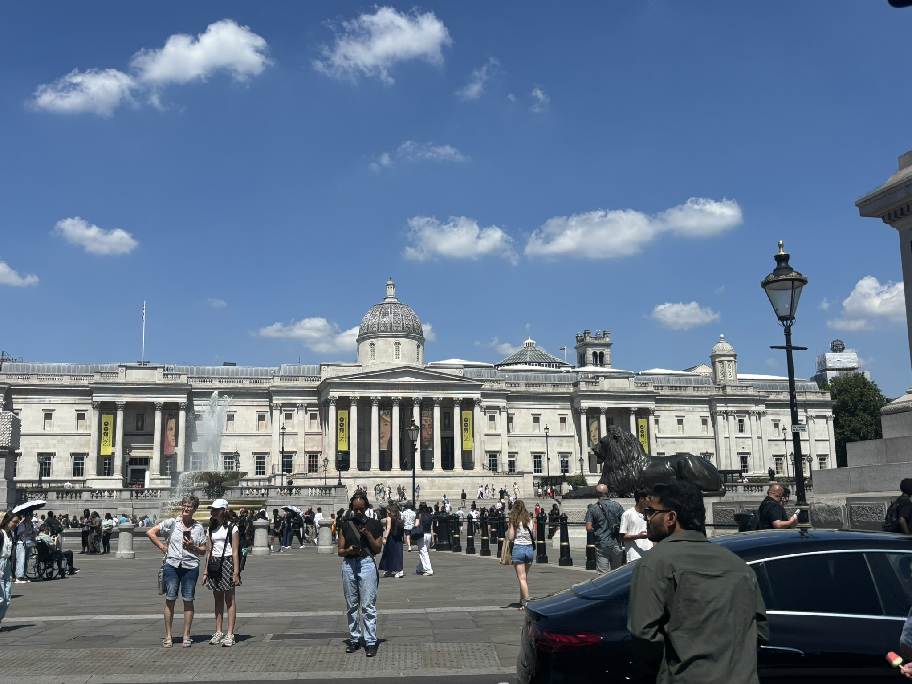
내셔널갤러리
유럽에서 처음 방분한 미술관은 영국이 자랑하는 내셔널 갤러리였다. 고전부터 현대에 이르기까지
인류가 남긴 가장 위대한 예술 작품을 무료로 만날 수 있다는 사실은 굉장히 인상깊었다. 또한
미술관 앞의 트라팔가 광장에 있는 넬슨 동상을 보며 영국인들의 그에 대한 사랑을 확인하였다.
2025년 7월 11일
타워 브리지
런던의 대표 명소인 타워 브리지, 그리고 그 위를 걸으며 템즈 강을 감상하였다. 많은 기대를 하고 템즈 강을 보았지만 강 색이 생각보다
더럽고 탁해서 조금 실망하였다. 타워 브리지 건물 자체는 상당한 건축 기술을 뽐냈지만, 템즈 강의 모습은
기대한것 보다 별로 였다.
2025년 7월 13일
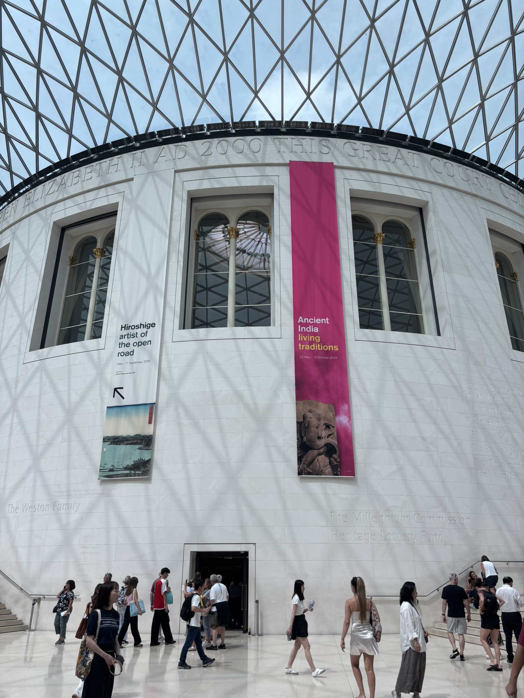
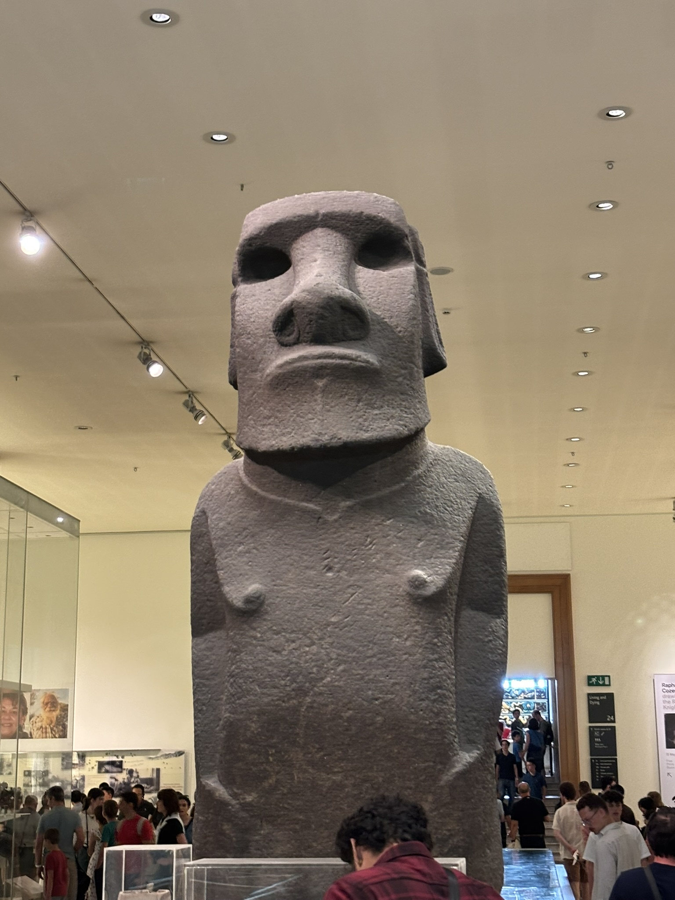
대영박물관
영국이 많은 나라에서 어마무시한 규모로 약탈해온 유품들을 전시해온 박물관인 대영박물관에 방문하게 되었다.
사람도 많고, 정신이 하나도 없었지만, 다양한 나라의 유품들을 볼 수 있어 좋았고 특히 3층에 위치한 한국관을 방문했을때
반가운 마음이 많이 들었다.
2025년 7월 14일
버킹엄 궁전
런던에서 보내는 마직막 일정은 근위병 교대식을 보기 위한 버킹엄 궁전을 방문하는 것이었다. 전통 의상과 정확한 동작이
인상적이었고, 궁전의 웅장함에 압도당하였다. 마지막날 만난 영국의 상징인 왕실을 수호하는 많은 기사단과 그들을 보며 환호하는
영국 시민들을 보며 비로소 영국이라는 나라에 대해 조금이라도 이해한 것 같았다.
2025년 7월 15일
🍽️ 런던에서 맛집 탐방
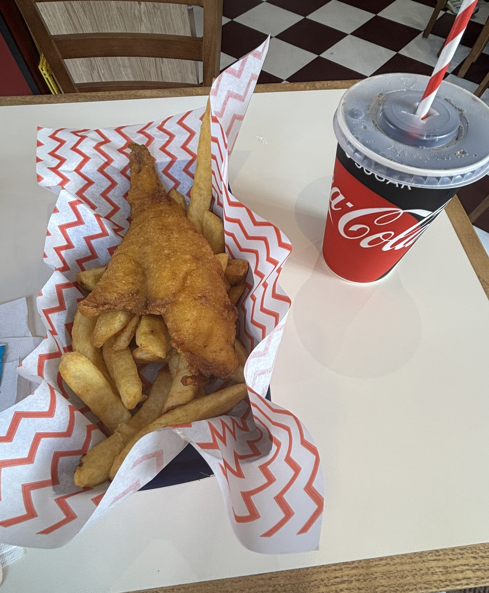
피쉬 앤 칩스
런던에서 꼭 먹어봐야 할 음식이기에 첫날에 바로 먹어보았다. 바삭한 튀김옷과 부드러운 생선,
그리고 두툼한 감자튀김. 익숙한 맛의 콜라와 함께 먹으니 상당히 괜찮은 맛이었다.
2025년 7월 11일
인도식 커리
음식이 맛이 없기로 소문한 영국, 우스갯소리로 가장 맛있는 음식은 과거 식민지였던 인도의 전통 요리인
커리라고 한다. 궁금해서 커리를 먹게 되었고, 그것은 나쁘지 않은 결과였다. 실제 인도인 셰프가 만들어
주는 음식은 이태원에서 먹었던 음식과는 달리 굉장히 맛이 있었다.
2025년 7월 12일
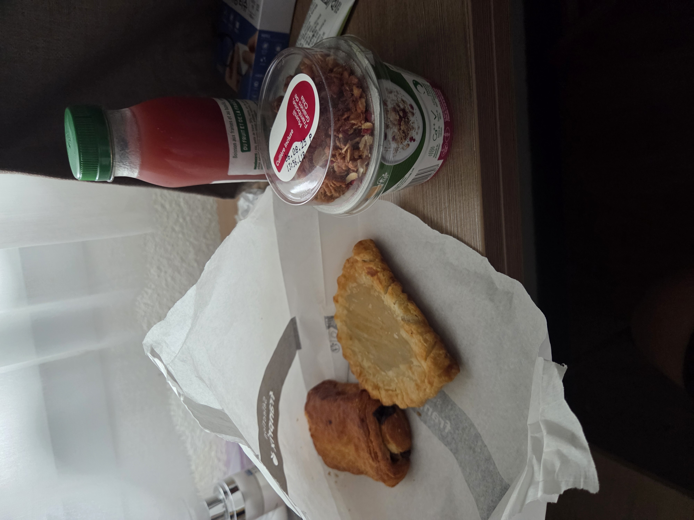
로컬 패스트푸드
항상 여행을 한다면 유명한 음식이 아닌 그 지역주민이 이용하는 식당을 가곤 한다.현지인들을 대상으로 하는 음식점이라
주문이 어렵고 의심이 가지만 음식의 퀄리티도 준수하고 가격도 나쁘지 않아 전반적으로 만족스러운 장소 였다.
2025년 7월 13일
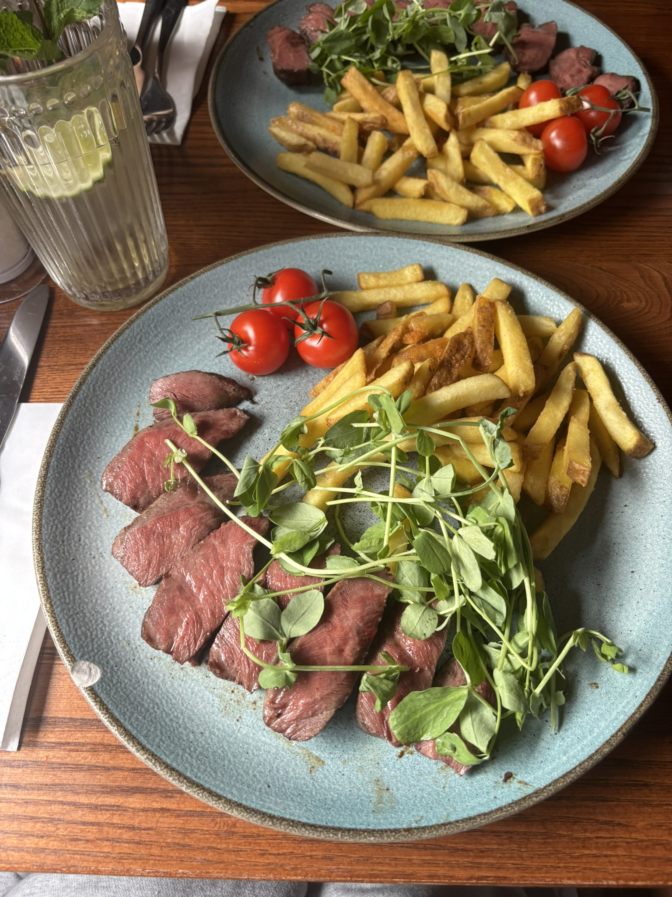
펍에서의 한끼
국 여행을 하면 꼭 가봐야 한다는 그 펍, 드디어 직접 경험해봤습니다. 겉보기엔 조용하고 오래된 느낌이라 조금 주저했지만,
막상 들어가니 분위기가 정말 따뜻했습니다.화려하진 않지만, 편안하게 하루를 마무리하기에 딱 좋은 곳이었다.
2024년 7월 15일
✨ 런던에서의 잊지 못할 순간들
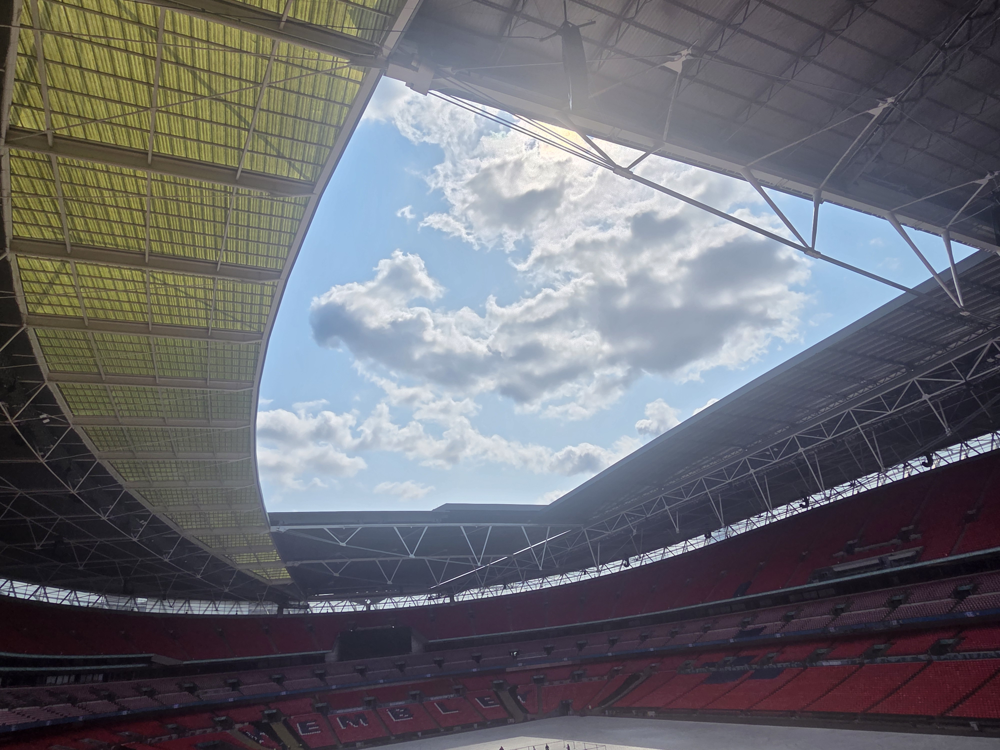
웸블리
영국 축구의 성지인 웸블리 경기장은 그 자체로 웅장한 느낌을 줍니다.
스포츠 팬이라면 꼭 한번 방문해야 할 명소인데, 경기 중이 아니라도
그 규모에 감탄하게 됩니다. 만약 영국에서 축구나 콘서트를 좋아한다면,
웸블리에서의 경험은 잊을 수 없는 추억이 될 것입니다.
2025년 7월 12일
그리니치
리니치 천문대는 시간의 시작을 알리는 장소로 잘 알려져 있죠.
"그리니치 평균시"로 유명한 이곳에서는 세계의 시간 기준이 정해졌다고 하니, 역사적인 의미가 남다릅니다.
별을 연구했던 과학자들의 발자취를 따라가며, 과학과 역사에 대해 많은 것을 배울 수 있는 좋은 기회였습니다.
2025년 7월 15일
노팅힐서점
노팅힐은 그 자체로 아름다운 동네지만, 그 중에서도 노팅힐 서점은 정말 특별한 곳입니다.
한적한 골목길에 숨겨진 작은 서점으로, 고요하고 아늑한 분위기 속에서 책을 한 권씩 살펴볼 수 있었습니다.
유명한 영화 노팅힐의 배경이 된 그 서점은 영화에서처럼 책을 좋아하는 사람이라면 더욱 가슴이
설렐 수밖에 없습니다.
2025년 7월 13일
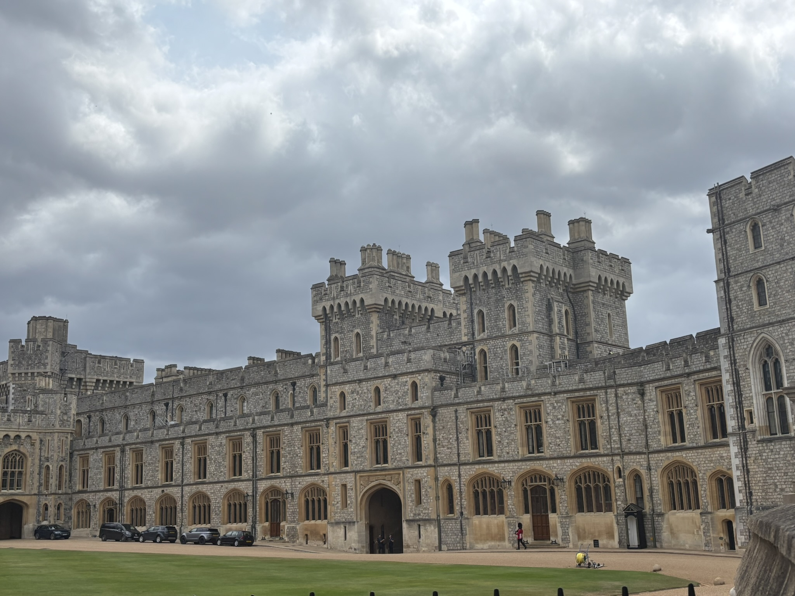
윈저성
런던의 브로드웨이! 'The Phantom of the Opera' 공연을 봤어요.
웅장한 무대와 감동적인 노래가 잊을 수 없습니다.
2025년 7월 14일
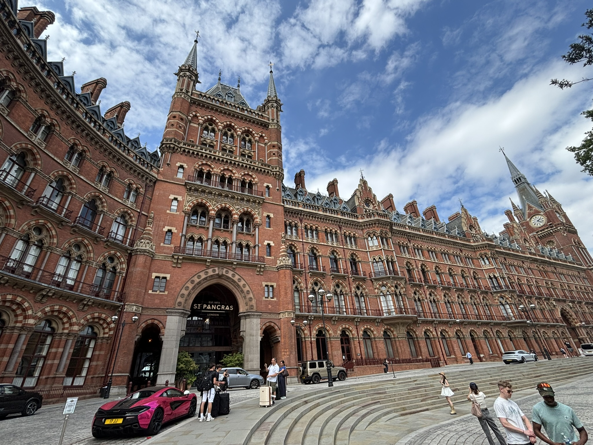
세인트 판크로스역
런던에서의 마지막 장소는 세인트 판크로스역이었다. 런던에서 파리를 가기 위한 마지막 장소이자.
처음으로 기차를 타고 해저 터널을 이용해서 다른 나라로 넘어간다는 일은 굉장히 흥미진진하고 잊을 수
없는 경험이었다.
2025년 7월 16일
📝 런던 여행 감상 남기기
✅ 메모가 성공적으로 저장되었습니다!
💾 저장된 메모
파리 여행 2024
낭만과 예술의 도시에서의 아름다운 추억
📍 파리에서 방문한 명소들
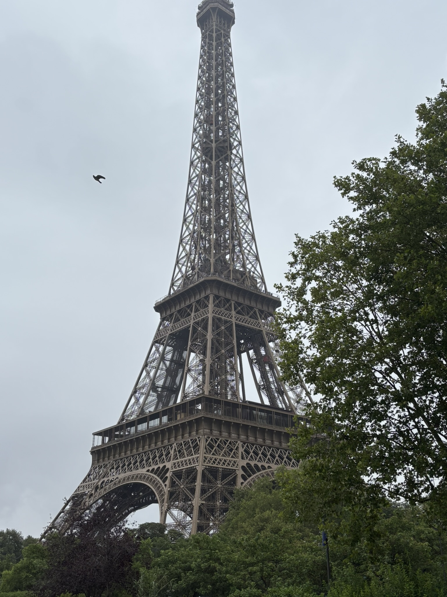
에펠탑
파리의 상징이자 구스타프 에펠의 걸작인 에펠탑은 내가 생각했던 것보다 크기가 훨씬 컸다. 당시에 비가 와서 전망대에 올라가서 전경을
보지는 않았지만, 근처만 가도 확실히 보이는 에펠탑의 모습은 내가 프랑스에 왔구나 하는 생각을 하게 되는 계기였다.
2025년 7월 16일
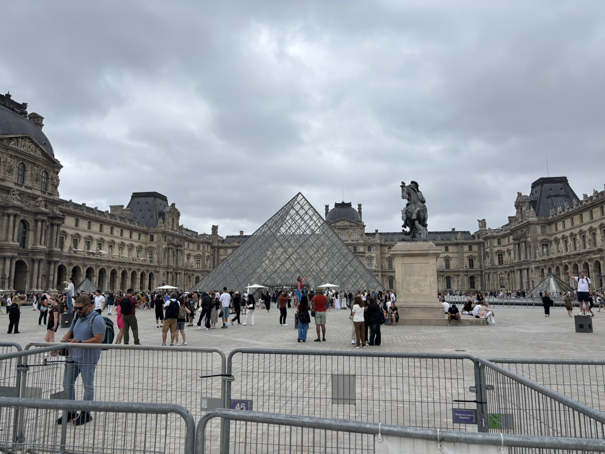
루브르 박물관
세계 최고의 박물관이자 그렇게 유명하다는 모나리자가 전시된 루브르에 갔다. 유리 피라마드부터 시작해서 모나리자에 이르기까지 많은 전시품이 있고,
많은 줄을 기다려야 했지만, 보람이 있었다.
2025년 7월 17일
노트르담 대성당
최근까지 화재로 인해 보수공사를 했었던 노트르담 대성당, 새로 개장한지 얼마 되지 않아 많은 대기시간을 가져야만 들어 갈 수 있었다. 프랑스가 자랑할 만한
외관과 안쪽의 아름답고 성스러운 여러 장식들까지 가톨릭이 주류인 프랑스의 수도 파리의 대교구 성당의 위엄을 잘 확인 할 수 있었던 시간이었다.
2025년 7월 17일
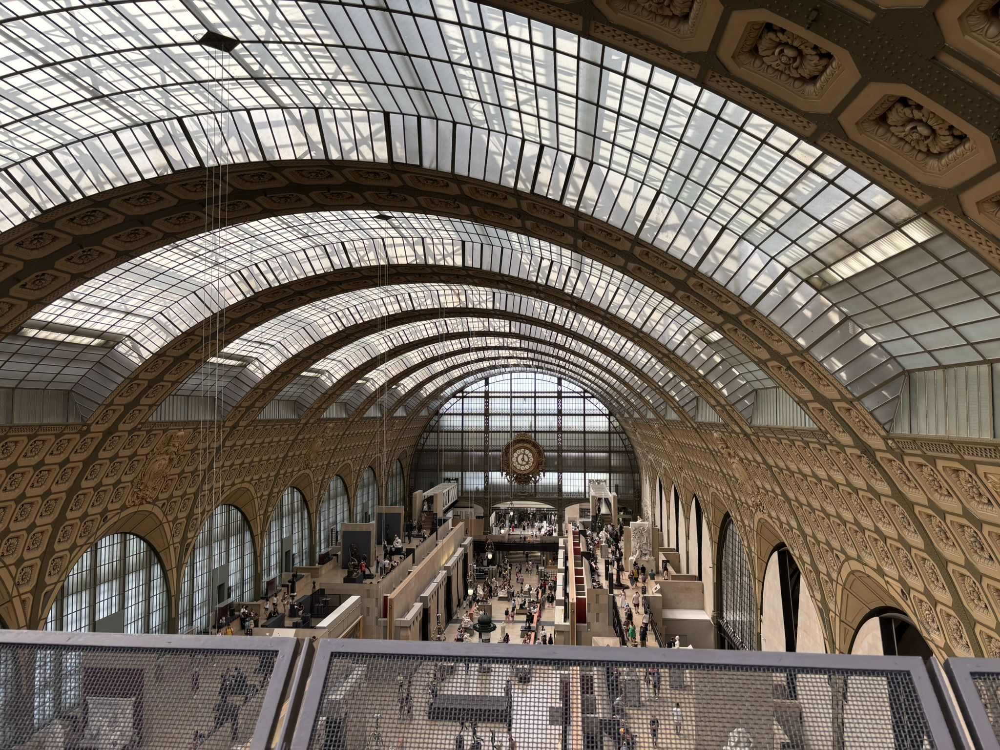
오르세 미술관
마지막 박물관 일정은 오르세 미술관이었다. 루브르에 비하면 작고 유명한 그림도 많이 있지는 않지만, 모네나 램브란트의 작품들을 보면서 과거 학교에서 배웠던 미술
과목이 생각나는 시간이었다.
2025년 7월 18일
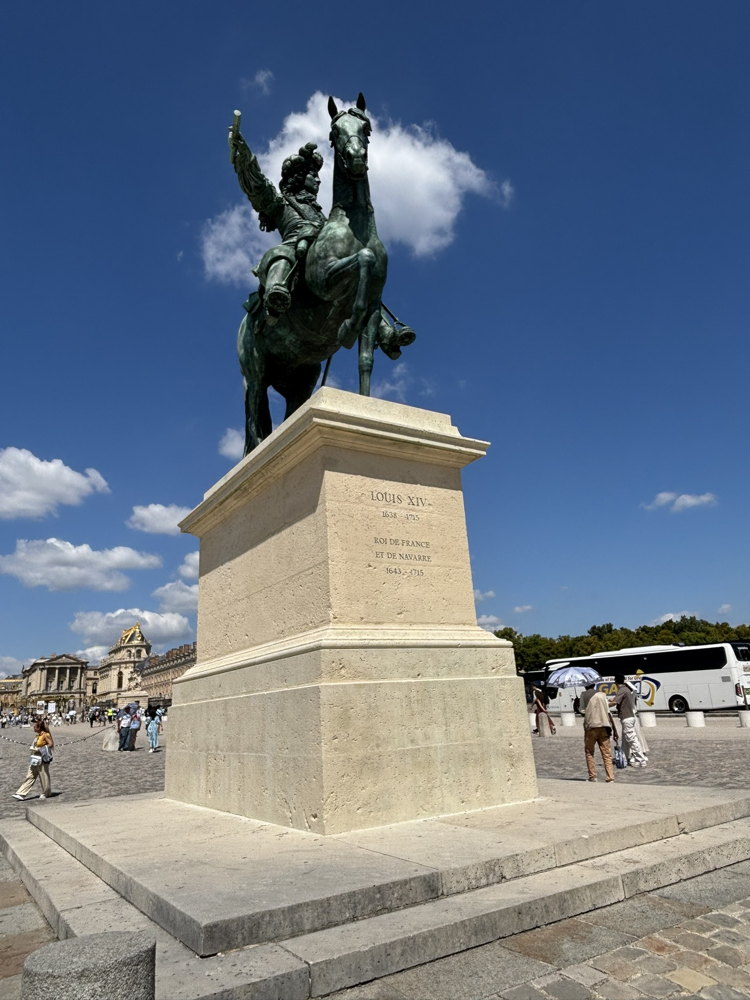
베르사유 궁전
절대 왕정 프랑스를 상징하는 베르사유 궁전은 태양왕 루이 14세와 함꼐 프랑스 최전성기를 상징하는 궁전이다. 잘 가꾸어진 정원과 함꼐 시간 맞춰 예약한 분수쇼까지
모든 것이 완벽했다. 특히 황금으로 이루어진 동상을 바라보며 강대국의 위엄을 느낄 수 있게된 시간이었다.
2024년 7월 19일
🍽️ 파리에서의 맛집 탐방
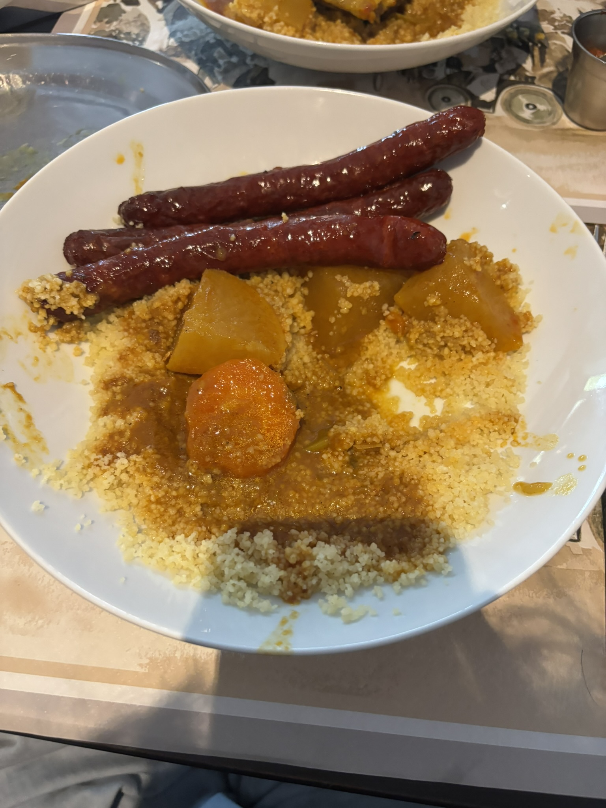
쿠스쿠스
알제리와 프랑스와의 관계는 서로 영향을 많이 주었다. 과거 프랑스가 알제리를 잔혹하게 탄압하고 물러났을대 프랑스에
남아있던 알제리 노동자들로 부터 비롯된 쿠스쿠스. 맛은 카레와 비슷하지만 식민지의 아픔을 느끼게 하는 맛이었다.
2024년 7월 6일
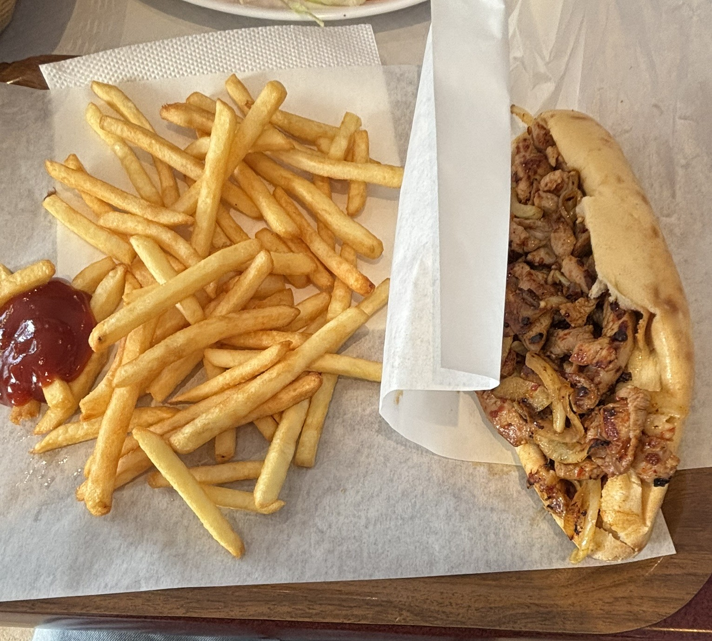
케밥
실제로 터키에서 온 사람의 식당에서 케밥을 먹었다. 육즙이 꽉 차 있어 한 입 베어물자마자
감탄이 나왔다. 향신료가 강하지 않아 부담 없이 즐길 수 있었다.
프랑스에서 먹은 케밥이 이렇게 맛있을 줄은 몰랐다.
2024년 7월 17일
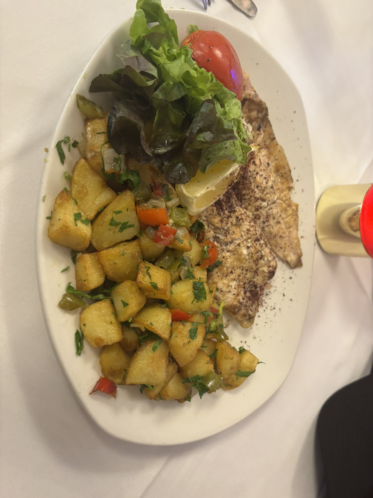
농어
인생살면서 농어 요리를 처음 먹어보았는데, 껍질은 바삭하고 속은 촉촉해 식감 대비가 훌륭했다.
레몬 몇 방울만 더해도 풍미가 확 살아났다.
해산물을 좋아한다면 실패 없는 선택이라고 생각한다.
한국에는 이런 식당이 없어서 아쉽지만 기회가 된다면 다시 먹고 싶다.
2024년 7월 18일
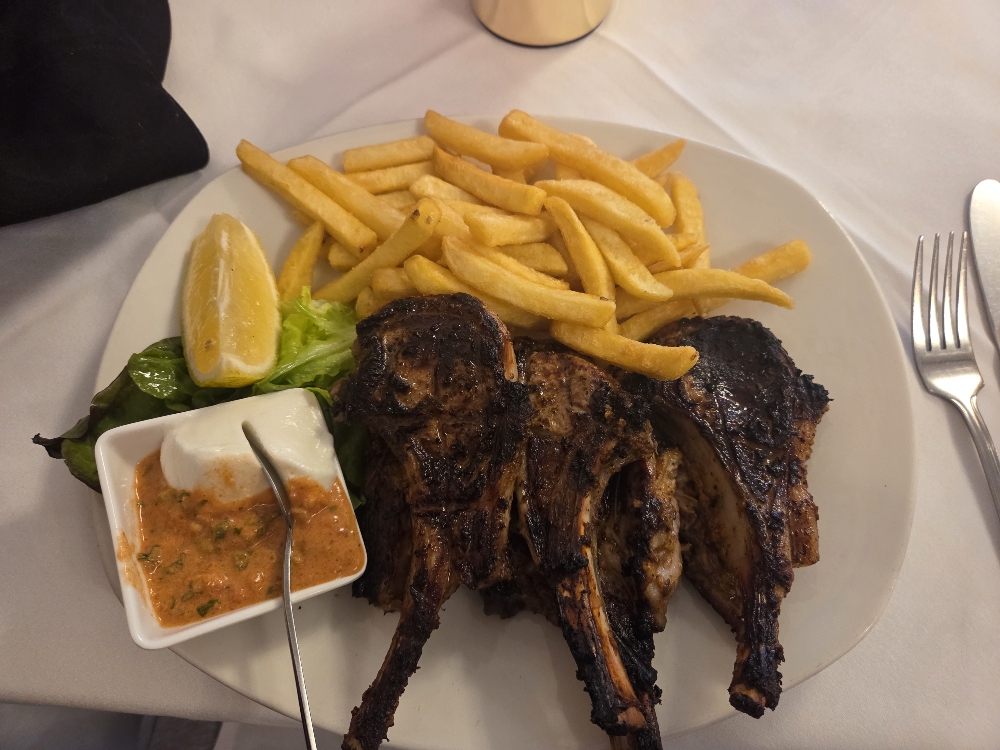
스테이크
프랑스에서 먹은 마지막 음식은 전통의 스테이크 였다. 굽기 상태가 딱 적당해서 자를 때마다 육즙이 촉촉했다.
기본에 충실한 맛이라 깔끔하게 만족스러웠다. 사이드까지 잘 어울려 완성도가 높았다.
2024년 7월 19일
✨ 특별한 방문 벨기에 브뤼셀 당일치기
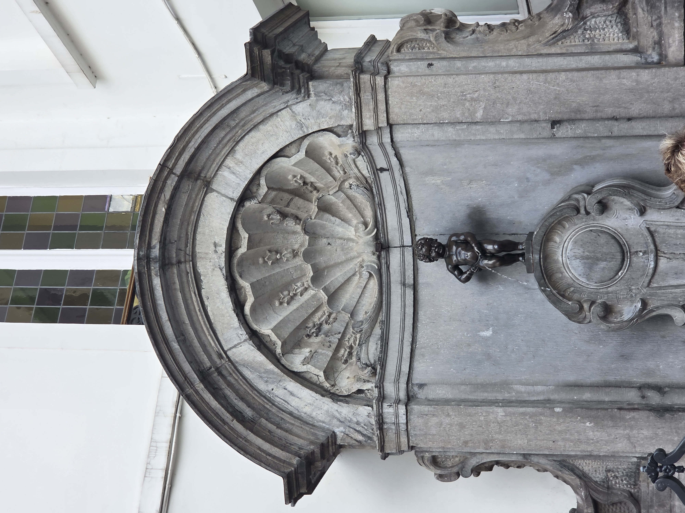
오줌싸게 동상
생각보다 훨씬 작아서 처음엔 조금 당황했지만, 보고 나니 묘하게 귀여웠다.
사람들 틈에 끼여 바라보는 그 순간이 오히려 재미있었다. 브뤼셀에 왔다는 인증 같은 명소였다.
2025년 7월 20일
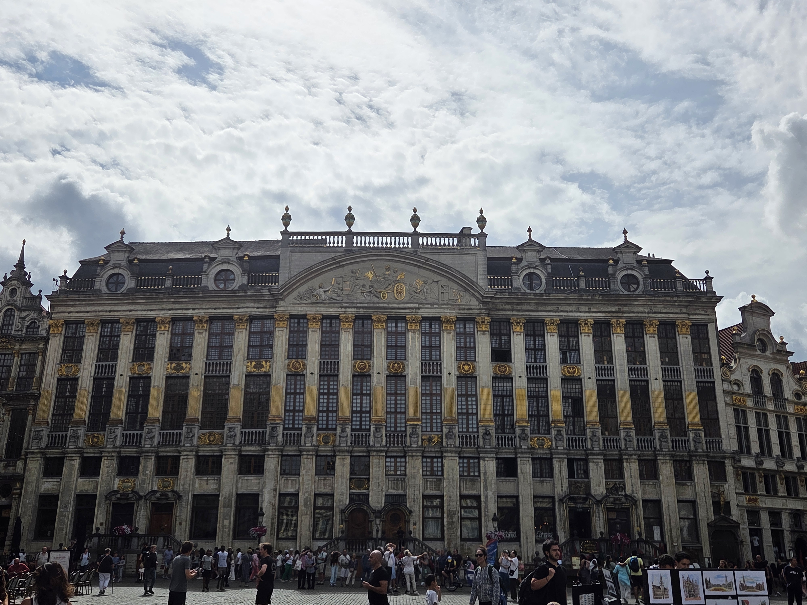
브뤼셀 왕궁
웅장한 외관이 먼저 눈길을 사로잡았다. 주변 공원과 함께 걸으니 건물의 아름다움이 더 도드라졌다. 아직 왕의 권위를 유지하는 벨기에의
에서 유럽 왕궁 특유의 품격이 그대로 느껴지는 장소였다.
2025년 7월 20일
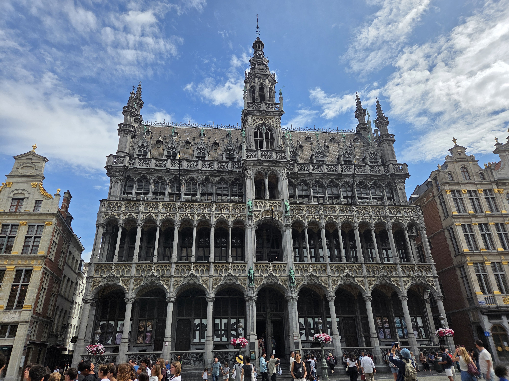
브뤼셀 중심 광장
광장에 들어서는 순간 금빛 장식의 건물들이 한꺼번에 시야를 채웠다. 낮도 예쁘지만, 밤이 되면 조명 덕분에 분위기가 더 화려해진다.
브뤼셀 여행의 하이라이트라 해도 과언이 아니다.
2025년 7월 20일
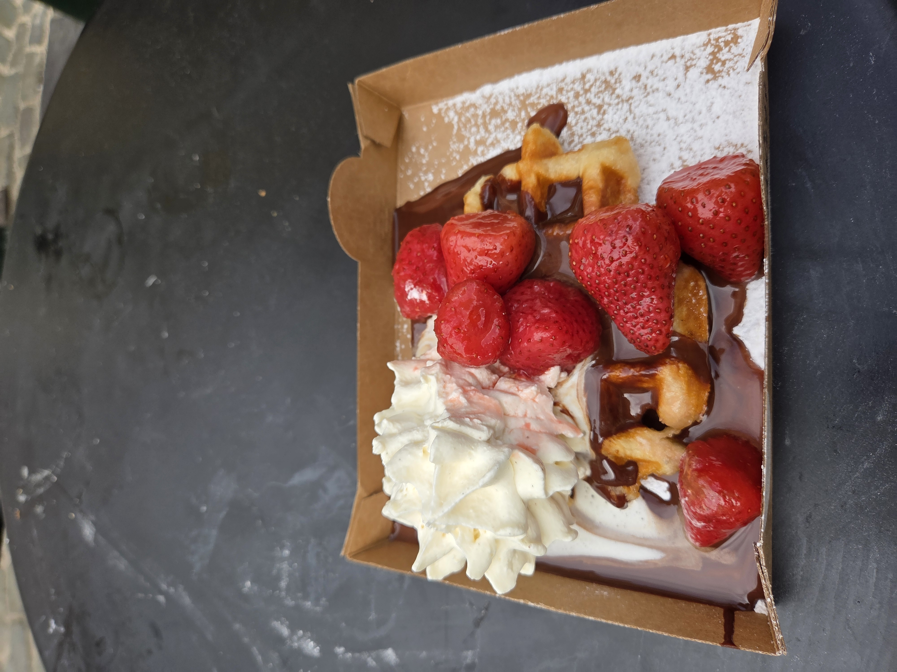
브뤼셀에서의 한끼
벨기에의 맛있는 음식은 와플이다. 겉은 바삭하고 속은 촉촉해 첫입부터 탄성이 나왔다.
토핑 없이도 맛있어 기본의 힘이 느껴졌다. 벨기에 와플이 유명한 이유를 확실히 알게 됐다.
2025년 7월 20일
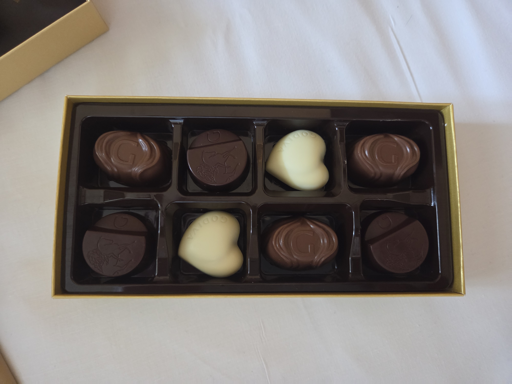
벨기에산 초콜릿
그 유명한 벨기에산 초콜릿을 선물용도로 몇개 사고 하나는 먹어보았다. 진하고 깊은 풍미가 입안에 오래 남아 만족감이 컸다.
과한 단맛 없이 깔끔해 고급스러운 맛이었다. 기념품으로 사가기에도 완벽한 선택.